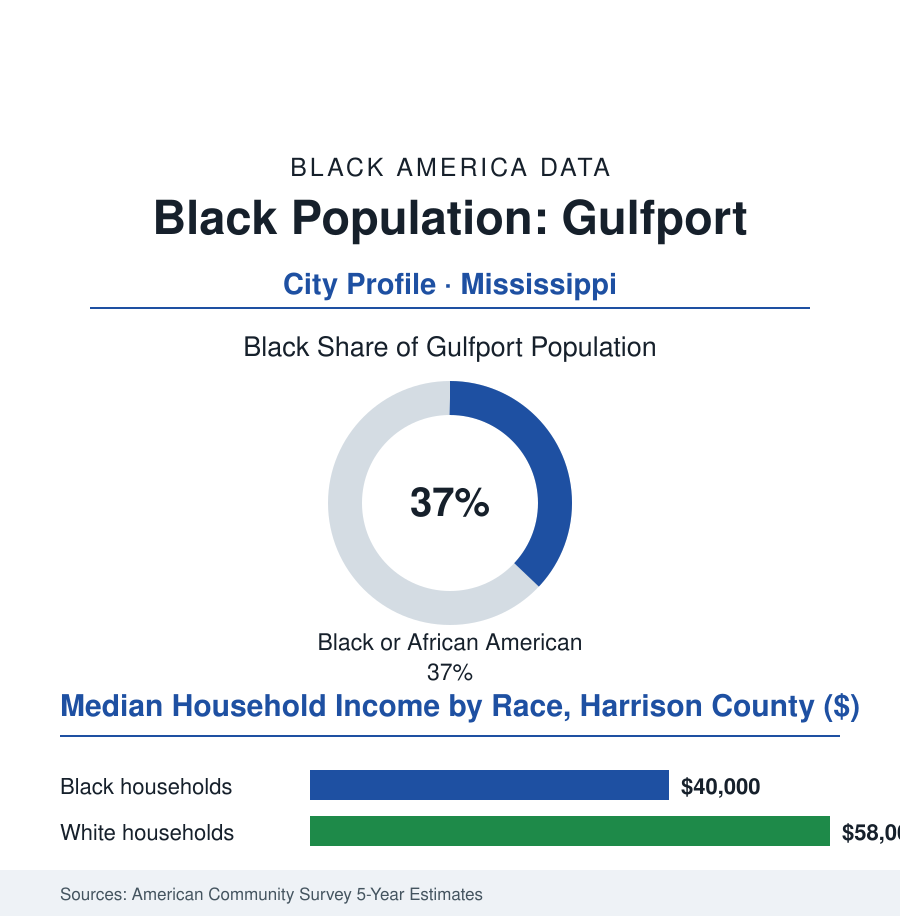

Black Cities
Black Gulfport: 27,000 People on the Working Coast
Gulfport's Black community rebuilt a port city through segregation, two epochal hurricanes, and the casino era — the Mississippi Gulf Coast's Black anchor.

Gulfport's Black community numbers roughly 27,000 people — about 37% of the city's 72,000 residents — in the Mississippi Gulf Coast's largest city, a working port town built on timber and bananas and twice unbuilt by the century's defining hurricanes. Its Black neighborhoods — Soria City, Gaston Point, the North Gulfport community — carry a history as distinct as any in this atlas. This article reads Gulfport's numbers.
Bananas, Timber, and the Neighborhoods the Storms Test
The port made the people: Gulfport's founding cargo was pine lumber, then the banana trade's Gulf terminus filled the docks with the stevedore work that drew Black families from the Pine Belt's farms to the coast's wages — the longshore file's Mississippi chapter, the neighborhoods rising behind the port in the pattern the whole atlas knows (the Black districts on the north side of the tracks, their institutions by the 1920s complete: the churches, the Thirty-Third Avenue school, the business rows of the segregated coast). The civil-rights chapter here has a beachhead for a name: the wade-ins of 1959–60 — Dr. Gilbert Mason and the Biloxi-Gulfport community's repeated walks into the Gulf's segregated water, among the movement's most photogenic and most punished protests (the 1960 wade-in's riot answering the swimmers in the record's plain language), the campaign ending, years later, in the federally ordered opening of twenty-six miles of the most beautiful segregated shoreline in America — the beach file written in salt water. Then the storms' double authorship: Camille in 1969 and Katrina in 2005, the latter the coast's reset — the surge erasing the shore's built world, the recovery's demographics in the census series (the population's dip and composition shift, the Black neighborhoods of the low ground rebuilt slower in the recovery data's every audit, the casino economy's legalization in the storm's aftermath rewriting the employment base toward the hospitality file's terms — the coast that segregation kept Black bathers from swimming off now employing their grandchildren to deal cards above it, an irony the community's own historians state without needing this file's help).
The Coast's Working Present
One neighborhood in the file deserves its own national footnote, because it earned one: Turkey Creek — founded by freedpeople in the 1860s on the creek north of the city — whose residents' fight against the airport's expansion and the watershed's industrial encroachment became, in the environmental literature, a canonical case of a historic Black community defending its ground with science and law, winning the creek's protections and a place on the endangered-places lists that turned into preservation. The watershed's defenders were the community's own — its elders in the hearing rooms, its creek baptisms entered as evidence of significance — the housing and environment files meeting, for once, in a victory the record signs.
The modern data describe the Mississippi coast's service-and-port economy with its Black community at the laboring center: the employers' roll spanning the state port (its expansion plans the region's standing economic argument), the casino resorts of the coast's dozen properties (the hospitality payroll their thousands), Keesler and the Seabee base next door adding the military file's gravity (the Black military families of Biloxi spilling across the line the map draws between the two cities — the metro functioning as one Black community of sixty thousand in the combined data, whatever the municipal borders claim), the shipbuilding of the Pascagoula yards an hour east drawing the coast's skilled trades. The household rows run the Gulf pattern: a Black median in the forty-thousands in the survey years, poverty's share deep, the insurance file's coastal surcharge (the wind policy's price after Katrina repricing homeownership's math along the whole shore — the housing file's climate chapter written first, here, in premiums), and the cultural shelf holding a fame the city's size cannot explain (the coast's gospel and blues traditions, its Carnival krewe — the Gulf Coast's Black Mardi Gras organizations among the celebration economy's oldest on the shore). The forward plans wager on the port's expansion and the beach's eternal franchise, on a shoreline whose public status was bought, within living memory, by the people this file counts — the wade-ins' grandchildren swimming, as of right, in front of the casinos.
Reading Gulfport's Numbers
Twenty-seven thousand people on the working coast: Gulfport is the cities file's shoreline entry — a port's wages, a beach's freedom hard-won in the surf itself, two hurricanes' erasures answered twice by rebuilding. The census counts the recovery. The water, which took the measure of everything else here, keeps its own counsel.
More in Black Cities
Black Atlanta: Population, Distribution, and Growth of a Black Metropolis
Metro Atlanta holds more than two million Black residents — roughly one in three, second only to New York. The suburban distribution, migration history, and composition of Black Atlanta in the census data.
Black New York: The Largest Black Population in America
The New York metropolitan area holds about 3.4 million Black residents — more than any metro in the nation — and the city itself about two million. The census profile.
Black Washington: The District and the Metro
The Washington metro holds about 1.6 million Black residents, and the District itself — long a majority-Black city — now records a Black share near 41 percent. The census profile.
Source: U.S. Census Bureau, 2020 Census and American Community Survey 5-year estimates; City of Gulfport and Harrison County; Mississippi Development Authority.